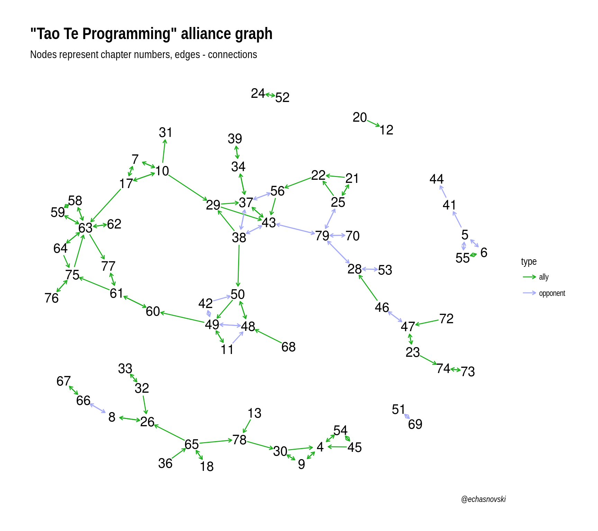

Tao of Tidygraph
Prologue
Quite some time ago I read the fantastic “Tao Te Programming” book by Patrick Burns. You can know this author from his everlasting work “The R Inferno”.
“Tao Te Programming” is a vision about what a good programming should be. It is written in [programming] language-agnostic fashion but mainly with R in mind. It is organized in 81 chapters with some distinctive feature: at the end of the most chapters there are lists of chapters-“allies” and chapters-“opponents” to the chapter in question. During the reading I was really interested in the properties of graph that is created with these connections.
From the other side of my life, I constantly hear about packages for tidy network analysis: tidygraph and ggraph. Both created by “compulsive package developer” (not sure, where to put “great” in this description) Thomas Lin Pedersen. They provide tidy tools for creating, manipulating and plotting network data. It happened, that I didn’t have an opportunity to work with them… until now.
Overview
This post is mainly about exploration of “Tao Te Programming” alliance graph using tidygraph and ggraph, with a few descriptions about those package functionality (for a thorough overview check out this speach by Thomas at rstudio::conf 2018). It will cover:
- Creation, visualization and exploration of alliance graph.
- Determination of “central programming advice” or “Why you should learn to dance the Debug 2-Step”.
Data and code can be found in my taoteprog repository. It is a project with R package structure which can be installed with devtools::install_github("echasnovski/taoteprog") (for easier data access). Public sharing of these data and results of this analysis is agreed with Mr. Burns by e-mail.
Setup:
library(taoteprog)
library(tidyverse)
library(tidygraph)
library(ggraph)
set.seed(201803)Alliance graph
Creation
Alliance graph is a set of chapters-nodes which created based on “ally” and “opponent” connections. It is created using the following data from taoteprog (which I manually created while reading a book):
ttp_chapters- a tibble with chapter data (columnchapterfor its number andnamefor its name). The whole list of chapters can be found here.ttp_edges- a tibble with data about chapter connections. It has the following columns:chapter1for the chapter number at which list of connections is printed.chapter2for the number of connected chapter.typefor connection type (either “ally” or “opponent”).
ttp_raw <- tbl_graph(nodes = ttp_chapters, edges = ttp_edges, directed = TRUE)
ttp_raw
## # A tbl_graph: 81 nodes and 124 edges
## #
## # A directed multigraph with 20 components
## #
## # Node Data: 81 x 2 (active)
## chapter name
## <int> <chr>
## 1 1 Program
## 2 2 Program Well
## 3 3 Think Chess
## 4 4 Carve Reality
## 5 5 Solve the Problem
## 6 6 Don't Solve the Problem
## # ... with 75 more rows
## #
## # Edge Data: 124 x 3
## from to type
## <int> <int> <chr>
## 1 4 9 ally
## 2 4 54 ally
## 3 5 6 opponent
## # ... with 121 more rowsThe main data structure of tidygraph is a tbl_graph which can be thought of as a combination of tibbles with data for nodes and edges. Note that values in from and to columns in edges tibble are the row indices of the nodes stored in nodes tibble, which will be a little confusing when nodes won’t cover all chapters.
Important features of this graph:
- There are 2 loops in graph (chapters “Be Consistent”, “Follow The Way”). And all of them are of type “opponent”, which I consider to be a subtle joke rather than editor mistake. However, for exploration these edges will be removed.
- There are 20 [weak] components in this graph (maximal groups of nodes where each pair can be connected by undirected path). The number is this big because there are many chapters with no “allies” and no “opponents” (isolated points in graph), which will be also removed for exploration.
So the graph of interest is constructed as follows:
ttp <- ttp_raw %>%
# Remove loops
activate(edges) %>%
filter(!edge_is_loop()) %>%
# Remove isolated nodes
activate(nodes) %>%
filter(!node_is_isolated())
ttp
## # A tbl_graph: 67 nodes and 122 edges
## #
## # A directed simple graph with 6 components
## #
## # Node Data: 67 x 2 (active)
## chapter name
## <int> <chr>
## 1 4 Carve Reality
## 2 5 Solve the Problem
## 3 6 Don't Solve the Problem
## 4 7 Enjoy Confusion
## 5 8 Procrastinate
## 6 9 Verbalize and Nounalize
## # ... with 61 more rows
## #
## # Edge Data: 122 x 3
## from to type
## <int> <int> <chr>
## 1 1 6 ally
## 2 1 44 ally
## 3 2 3 opponent
## # ... with 119 more rowsSome explanations of the magic just happened:
activate()verb fromtidygraphserves as a switch between tibbles for nodes and edges. All dplyr verbs applied totbl_graphobject are applied to the active tibble.edge_is_loop(),node_is_isolated()andgroup_components()are functions of the same essence asn()indplyr: they both should be called inside a graph computation functions.
Visualization
ttp %>%
ggraph(layout = "nicely") +
geom_edge_link(
aes(colour = type),
arrow = arrow(length = unit(1.5, "mm")),
start_cap = circle(3, "mm"),
end_cap = circle(3, "mm")
) +
geom_node_text(aes(label = chapter), size = 5) +
scale_edge_colour_manual(values = c(ally = "#22B022",
opponent = "#A4AAF6")) +
theme_graph() +
labs(
title = '"Tao Te Programming" alliance graph',
subtitle = "Nodes represent chapter numbers, edges - connections",
caption = "@echasnovski"
)
Important notes about creation of this plot:
ggraph()is the equivalent ofggplot()in ggplot2 and also returns aggplotobject.ggraph()takes alayoutargument for the type of graph arrangement in plot.geom_edge_link()andgeom_node_text()are very muchggplot2-like functions: they create layers of plot (for links and nodes respectively).theme_graph()is a pre-installedggraphtheme.
Exploration
Notes about graph structure:
⬛ There are two relatively big components (with 16 and 40 nodes) and 4 small ones (one with 5 nodes and three with 2).
⬛ There are considerably more “ally” connections then “opponent” which can be confirmed by the following code:
ttp_edges %>% count(type)
## # A tibble: 2 x 2
## type n
## <chr> <int>
## 1 ally 88
## 2 opponent 36⬛ The graph itself can be considered as signed graph, i.e. a graph “in which each edge has a positive or negative sign”. This type of graphs can be studied for special community detection: nodes within common community should be primarily connected with positive (“ally”) edges and between communities - by negative (“opponent”) ones.
Interesting problem description and solution are presented in this paper. I implemented the variation of the suggested approach, which can be found in my raw analysis on github (or here for its html output). Implementation is rather verbose with no very special insight, so I decided to not include it here.
Central advice
One of the reasons I started this research is to find “central programming advice” based on the “Tao Te Programming”. By that I mean a piece of advice as the core wisdom which should be mastered first as other advice “depend” on it.
Perhaps, one of the most popular way to compute the centrality value of graph nodes is PageRank algorithm. The core idea is that edges of the graph are treated as possibilities for transition to another node, which current node “sees” as important. PageRank assumes that some traveler starts at random node and constantly moves using “available edges”. Sometimes, the process is restarted at the new (randomly picked) starting node and transition continues. The PageRank score of the node is the probability of finding a traveler in a particular node at random time in the future: the more this value the more important this node.
This approach needs some correction to be applied to our alliance graph because present edges are not all the same. “Ally” edges can be considered as normal edges in the described framework but what should we do with “opponent” edges? We will go by the following logic: if “ally” edge makes more important node to which it is headed, then “opponent” edge should make more important node from which it is headed. This can be accomplished by introducing “peaceful” variation of alliance graph: all “opponent” edges are reversed and tagged as “ally”. This way starting node of [previously] “opponent” edge will receive more possibilities for traveler to appear in it.
Using “peaceful” alliance graph, constructed from all chapters and edges (for more proximity to raw data), we can determine nodes with the highest PageRank scores with the following code:
edges_peace <- ttp_edges %>%
transmute(
from = if_else(type == "ally", chapter1, chapter2),
to = if_else(type == "ally", chapter2, chapter1)
)
tbl_graph(
nodes = ttp_chapters, edges = edges_peace, directed = TRUE
) %>%
activate(nodes) %>%
mutate(centr = centrality_pagerank()) %>%
as_tibble() %>%
arrange(desc(centr))
## # A tibble: 81 x 3
## chapter name centr
## <int> <chr> <dbl>
## 1 63 Dance the Debug 2-Step 0.0403
## 2 4 Carve Reality 0.0346
## 3 61 Think Safety 0.0324
## 4 8 Procrastinate 0.0313
## 5 37 Become a Ghost 0.0291
## # ... with 76 more rowsThe most important advice is from chapter 63 “Dance the Debug 2-Step”. This is a rather long chapter which contains many peaces of mini-advice about debugging process. My personal favorite:
- The Debug 2-step is 1) DON’T PANIC!! and 2) Figure out what’s wrong. Not very easy steps.
- The fastest way to debug is to not have bugs that are hard to find.
- One of the best ways to track down a bug is to continuously simplify the problem.
- Simplification should be driven by hypotheses you make. The cycle is: 1) create a hypothesis, 2) test the hypothesis.
- A bug means there is at least one assumption that is being violated. You are really looking for false assumptions.
- The harder a bug is to find, the sillier the cause.
- Once you find the problem, create at least one test to include in your test suite that exhibits the bug.
Conclusions
- The book “Tao Te Programming” by Patrick Burns is an amazing source of wisdom.
- Packages tidygraph and ggraph by Thomas Lin Pedersen offer consistent “tidy” tools for network analysis.
- To learn to program one should learn to debug.
## R version 3.4.3 (2017-11-30)
## Platform: x86_64-pc-linux-gnu (64-bit)
## Running under: Ubuntu 16.04.4 LTS
##
## Matrix products: default
## BLAS: /usr/lib/openblas-base/libblas.so.3
## LAPACK: /usr/lib/libopenblasp-r0.2.18.so
##
## locale:
## [1] LC_CTYPE=ru_UA.UTF-8 LC_NUMERIC=C
## [3] LC_TIME=ru_UA.UTF-8 LC_COLLATE=ru_UA.UTF-8
## [5] LC_MONETARY=ru_UA.UTF-8 LC_MESSAGES=ru_UA.UTF-8
## [7] LC_PAPER=ru_UA.UTF-8 LC_NAME=C
## [9] LC_ADDRESS=C LC_TELEPHONE=C
## [11] LC_MEASUREMENT=ru_UA.UTF-8 LC_IDENTIFICATION=C
##
## attached base packages:
## [1] methods stats graphics grDevices utils datasets base
##
## other attached packages:
## [1] bindrcpp_0.2 ggraph_1.0.1 tidygraph_1.1.0 forcats_0.3.0
## [5] stringr_1.3.0 dplyr_0.7.4 purrr_0.2.4 readr_1.1.1
## [9] tidyr_0.8.0.9000 tibble_1.4.2 ggplot2_2.2.1 tidyverse_1.2.1
## [13] taoteprog_0.0.1 igraph_1.1.2
##
## loaded via a namespace (and not attached):
## [1] ggrepel_0.7.0 Rcpp_0.12.15 lubridate_1.7.3
## [4] lattice_0.20-35 utf8_1.1.3 assertthat_0.2.0
## [7] rprojroot_1.3-2 digest_0.6.15 psych_1.7.8
## [10] ggforce_0.1.1 R6_2.2.2 cellranger_1.1.0
## [13] plyr_1.8.4 backports_1.1.2 evaluate_0.10.1
## [16] httr_1.3.1 blogdown_0.5 pillar_1.2.1
## [19] rlang_0.2.0 lazyeval_0.2.1 readxl_1.0.0
## [22] rstudioapi_0.7 rmarkdown_1.9 labeling_0.3
## [25] udunits2_0.13 foreign_0.8-69 munsell_0.4.3
## [28] broom_0.4.3 compiler_3.4.3 modelr_0.1.1
## [31] xfun_0.1 pkgconfig_2.0.1 mnormt_1.5-5
## [34] htmltools_0.3.6 gridExtra_2.3 bookdown_0.7
## [37] viridisLite_0.3.0 crayon_1.3.4 MASS_7.3-49
## [40] grid_3.4.3 nlme_3.1-131 jsonlite_1.5
## [43] gtable_0.2.0 magrittr_1.5 units_0.5-1
## [46] scales_0.5.0 cli_1.0.0 stringi_1.1.6
## [49] reshape2_1.4.3 viridis_0.5.0 xml2_1.2.0
## [52] tools_3.4.3 glue_1.2.0 tweenr_0.1.5
## [55] hms_0.4.1 parallel_3.4.3 yaml_2.1.17
## [58] colorspace_1.3-2 rvest_0.3.2 knitr_1.20
## [61] bindr_0.1 haven_1.1.1